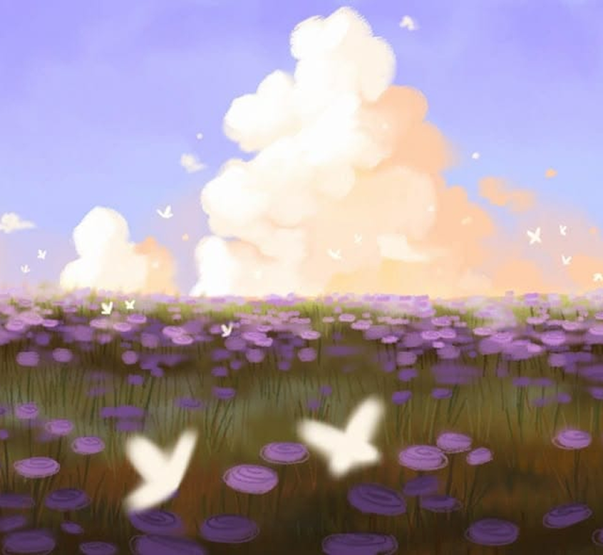
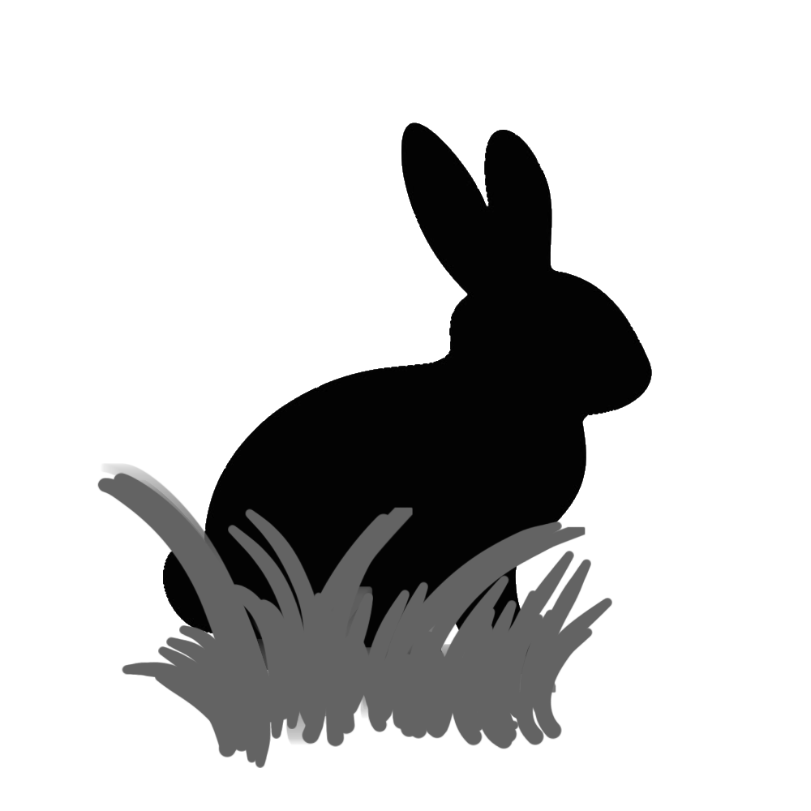
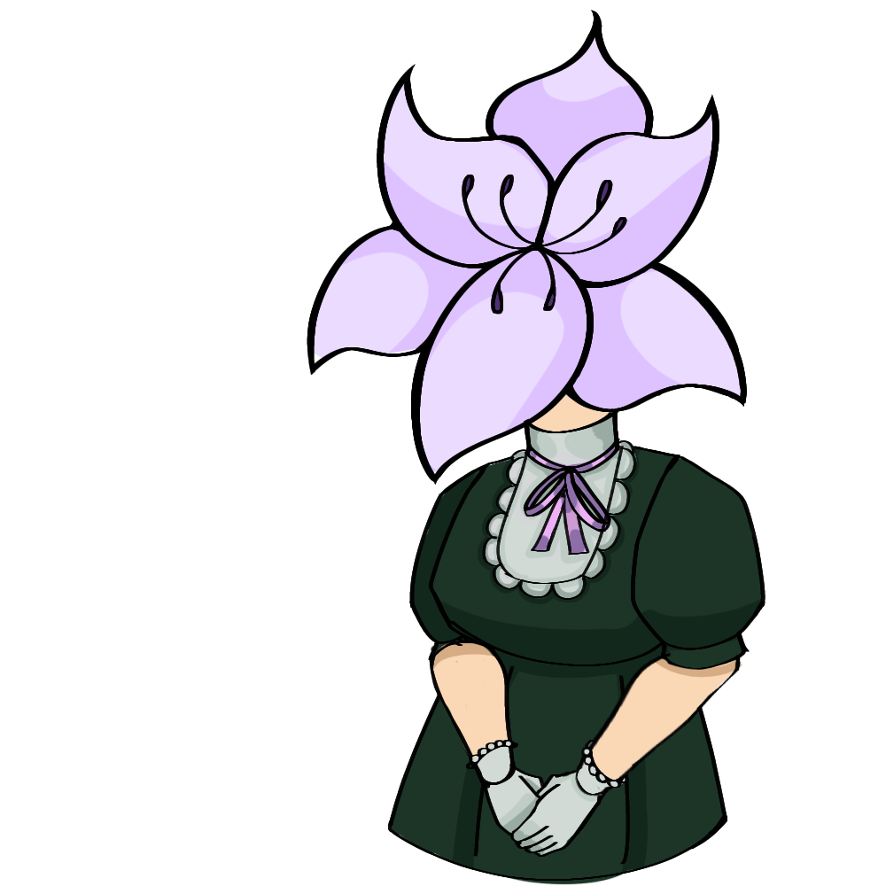
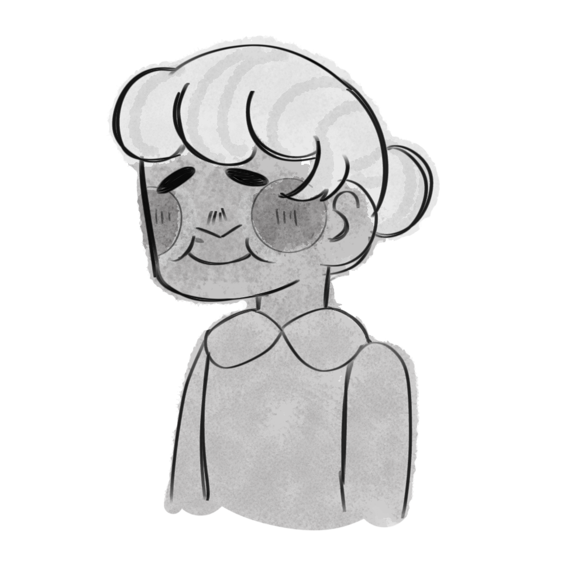
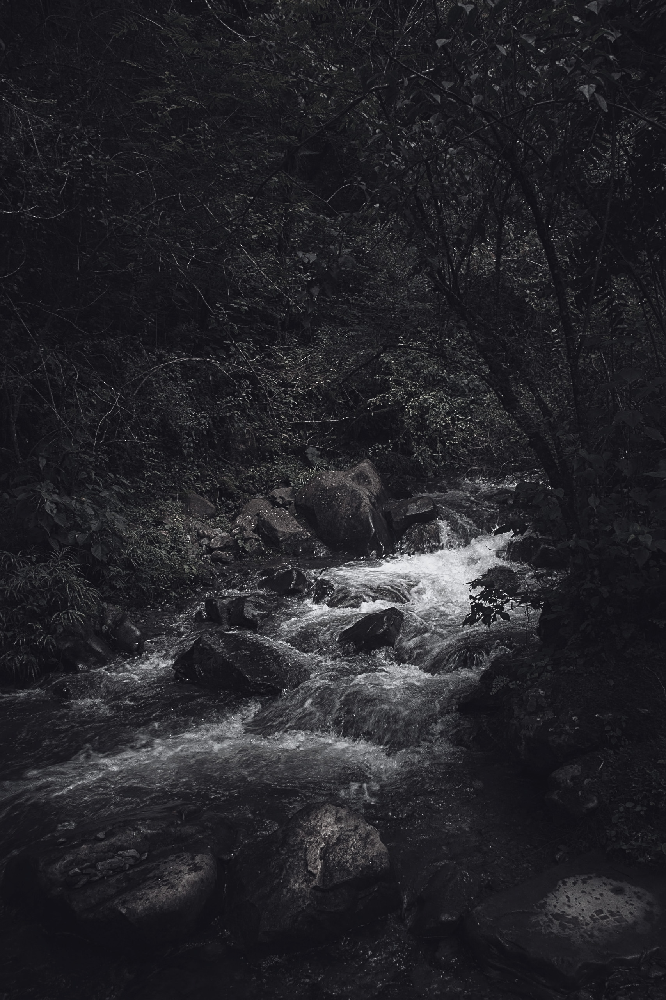

Lillium
Jornada em
Lírios
Catarina é uma adorável garotinha, que se vê em um belo campo de lírios, onde as pessoas tem corpos cobertos de flores; mas o que aconteceu? Onde ela está e quem são essas pessoas? Por que a última coisa da qual se lembra é sua mãe assustada?

Saiba Mais
Explore o mundo de Lillium

Catarina
A criança perdida que procura respostas que não sabe onde encontrar sobre coisas que nem imagina

O Campo de Lírios
O belíssimo campo de lírios roxos com um perfume inigualável

O Coelho
Ele usa cartola, mas pouco se sabe além disso

Menino Theo
Criança curiosa que não sabe o que busca mas pode ajudar

Rainha Bolena
A sábia, amargurada e antiga rainha, estando há mais tempo do que se pode contar

Dona Maria
Uma pacata senhora
Bosque Oblivium
A floresta onde estão vagantes em esquecimento

Rio Obliviscentia
Quem beber de suas águas se esquecerá
Angor Iter
Um lugar para a jornada de angústia
Sobre Nós
Lillium nasce como um projeto que visa a conscientização sobre
violência doméstica, principalmente contra a mulher e como se dá seu
ciclo; buscando fazer isso de forma lúdica.
A CodeBreaker se preocupa com a experiência do jogador, realizando o
jogo com desenhos e roteiro feitos à mão, sem o uso de IA, com
acessibilidade e dublagem voluntária
100%
ARTESANAL
0%
IA